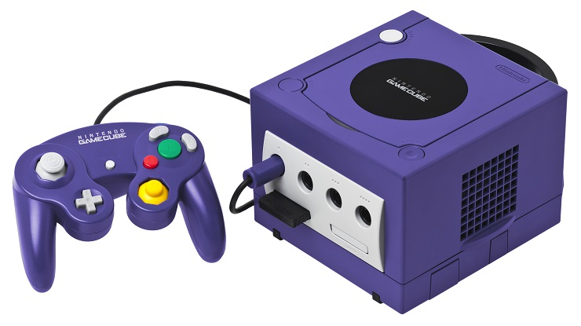

Konsola Nintendo Gamecube
Nintendo GameCube zostało zaprezentowane po raz pierwszy na targach Electronic Entertainment Expo (E3) w maju 2001 roku. Była następcą popularnej konsoli Nintendo 64 i próbą odniesienia sukcesu w rywalizacji z konsolami Sony PlayStation 2 i Microsoft Xbox. Jednak Nintendo zdecydowało się na unikalne podejście do projektu, kreując konsolę o charakterystycznym kształcie sześcianu, który przyciągał uwagę i wyróżniał się spośród konkurencyjnych produktów.
